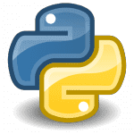

Python is an interpreted, high-level, general-purpose programming language. Created by Guido van Rossum and first released in 1991, Python's design philosophy emphasizes code readability with its notable use of significant whitespace. Its language constructs and object-oriented approach aim to help programmers write clear, logical code for small and large-scale projects. Python is dynamically typed and garbage-collected. It supports multiple programming paradigms, including structured (particularly, procedural), object-oriented, and functional programming. Python is often described as a "batteries included" language due to its comprehensive standard library.
WHO USES IT?
Professions and Industries: Python developers, software engineers, back end developers, Python programmers Used by employers in information technology, engineering, professional services and design Major Organizations: Google, Pinterest, Instagram, YouTube, DropBox, NASA, ESRI Specializations and Industries: Web and Internet development (frameworks, micro-frameworks and advanced content management systems); scientific and numeric computing; desktop graphicaluser interfaces (GUIs)